المختبر على الكمبيوتر
Desktop workspace
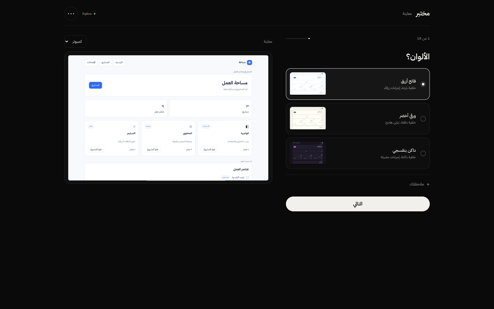
سؤال وخيارات ومعاينة واحدة.
One question, its alternatives, and one preview.
واجهة المهارة وخريطة الصفحات. مثال محايد، بدقة مضاعفة.
Skill interface and page-flow canvas. Neutral example captured at 2× pixel density.

سؤال وخيارات ومعاينة واحدة.
One question, its alternatives, and one preview.
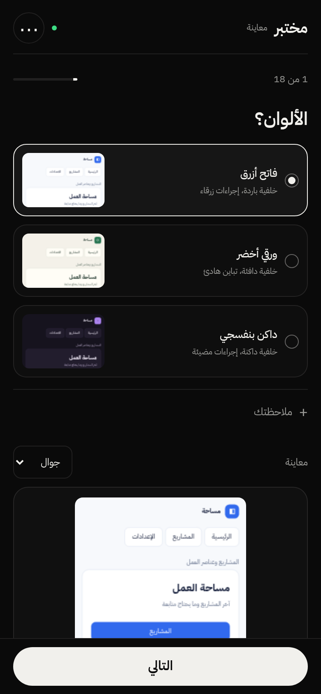
السؤال والخيارات أولًا، والتالي ثابت أسفل الشاشة.
Question and options first; Next stays at the bottom.
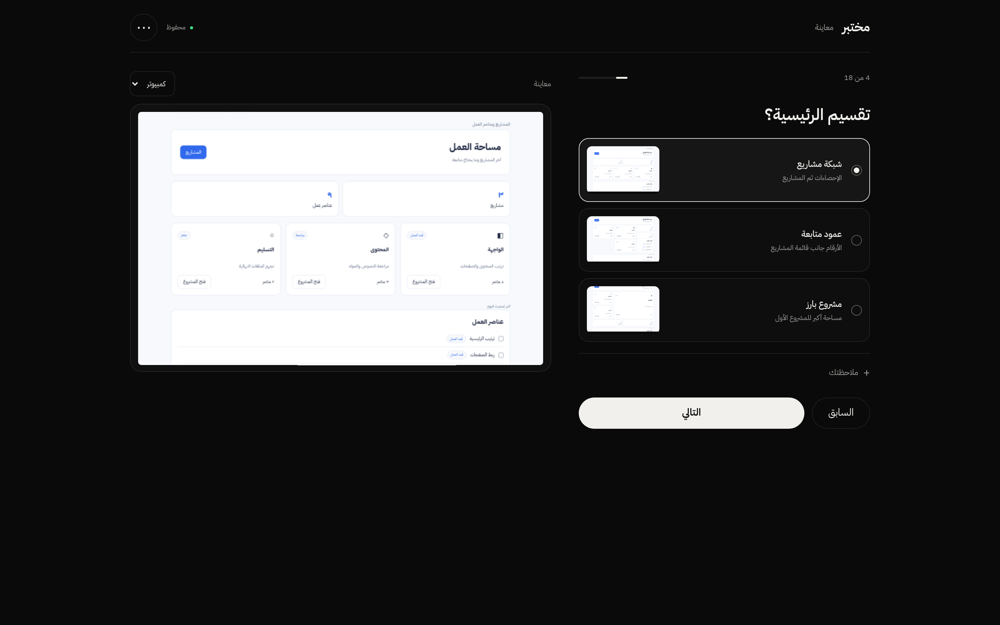
الخيارات تطبّق التقسيم على محتوى الصفحة الفعلي.
Alternatives apply composition changes to actual page content.
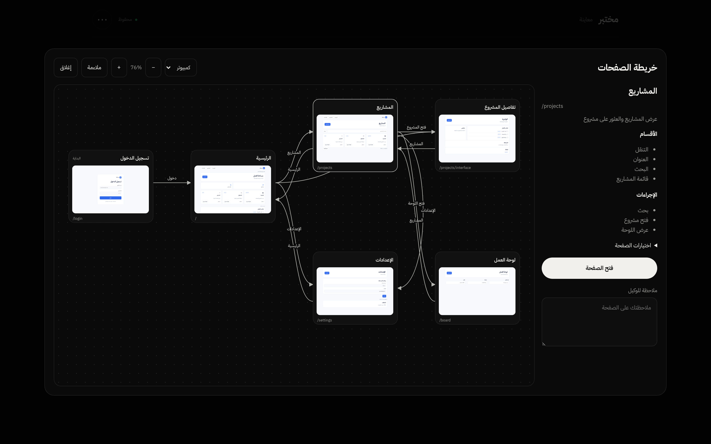
ست صفحات وروابط مسماة؛ تظهر نقطة البداية ومسارات الانتقال.
Six pages with labeled connections, an entry point, and navigation paths.
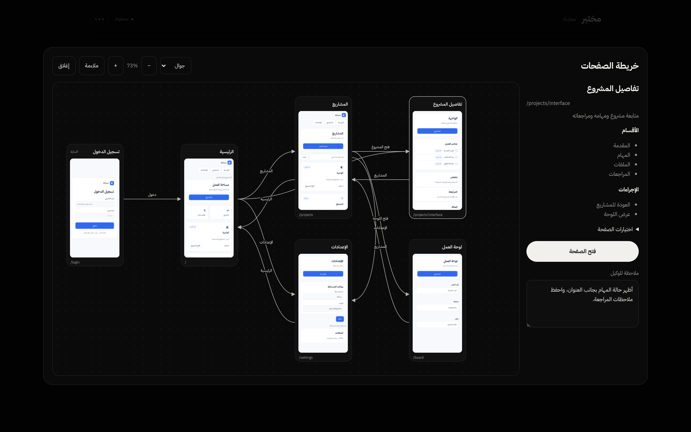
الكانفس مفتوح على الكمبيوتر، والمصغرات تستخدم أبعاد صفحات الجوال.
The canvas is open on desktop while its thumbnails use phone viewports.
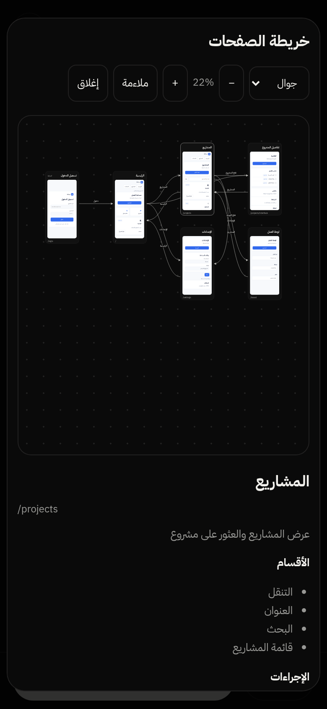
الخريطة متاحة على الجوال مع السحب والتكبير وفتح الصفحة.
The canvas is available on phones with panning, zooming, and page inspection.
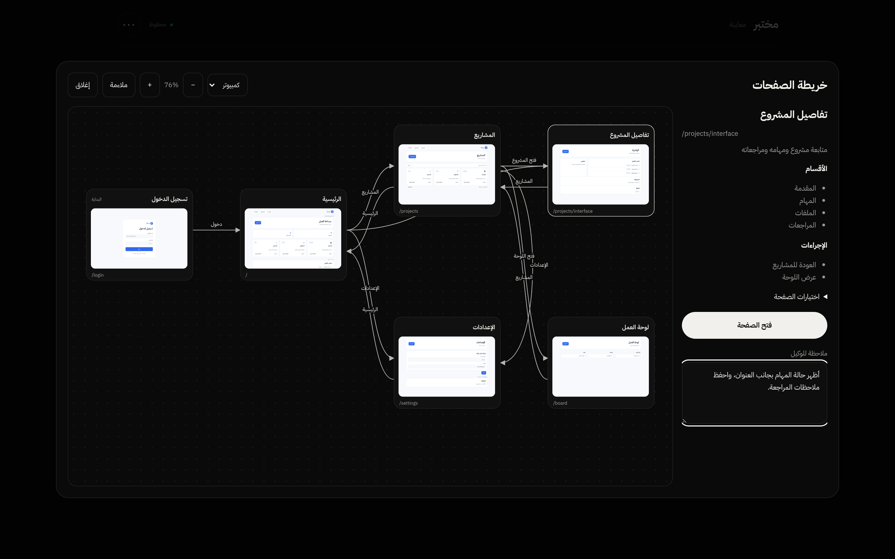
اختيار عقدة يُظهر الأقسام والإجراءات وملاحظة مستقلة للوكيل.
Selecting a node reveals sections, actions, and a separate note for the agent.
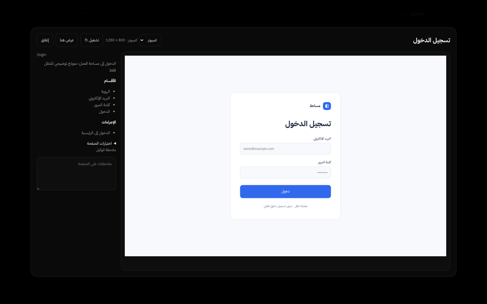
صفحة منفردة بقياس 1280×800 مع مواصفاتها. الدخول محاكاة تنقل.
A separate 1280×800 page with specifications. Login simulates navigation.
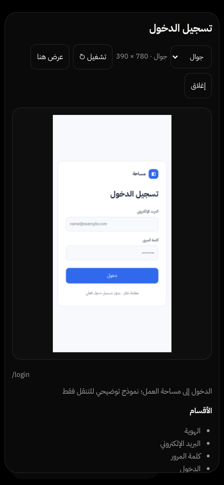
نفس الصفحة بقياس 390×780 داخل واجهة الجوال.
The same page uses a 390×780 viewport inside the phone interface.
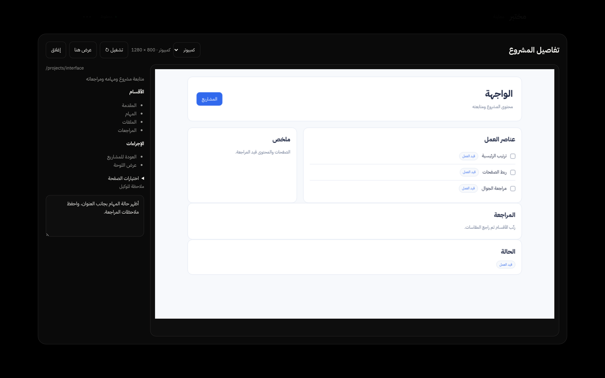
التصميم الفعلي ومواصفاته وملاحظة الصفحة في نافذة واحدة.
Actual page design, specifications, and its note in one inspection window.
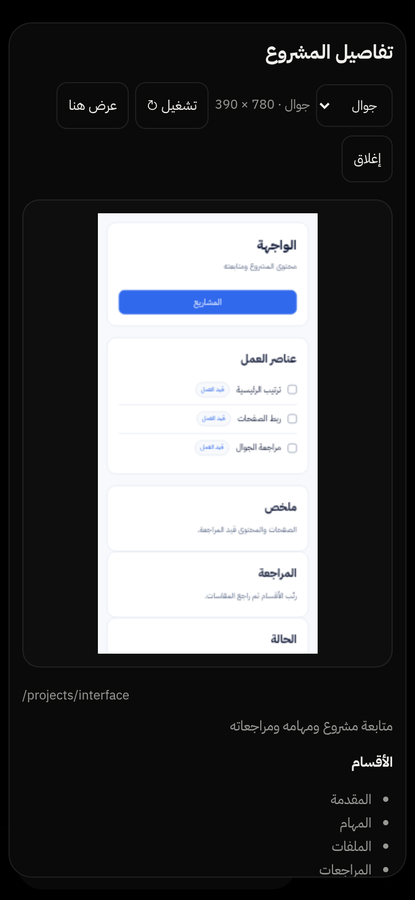
معاينة متجاوبة للصفحة منفردة على الجوال.
A responsive, separate page preview on a phone.
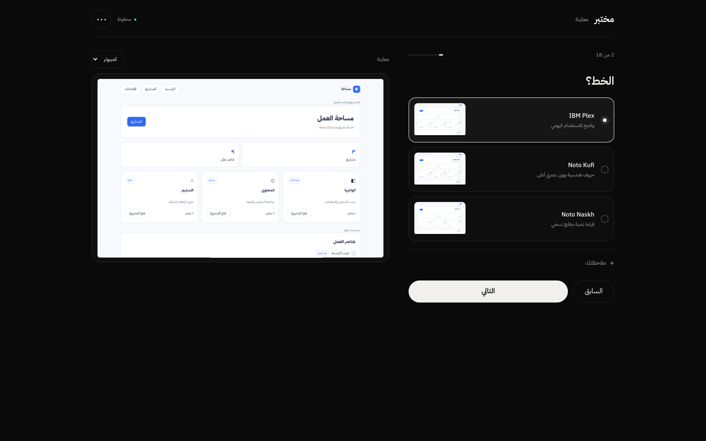
مقارنة الخطوط على محتوى المعاينة نفسه.
Compare fonts on the same preview content.
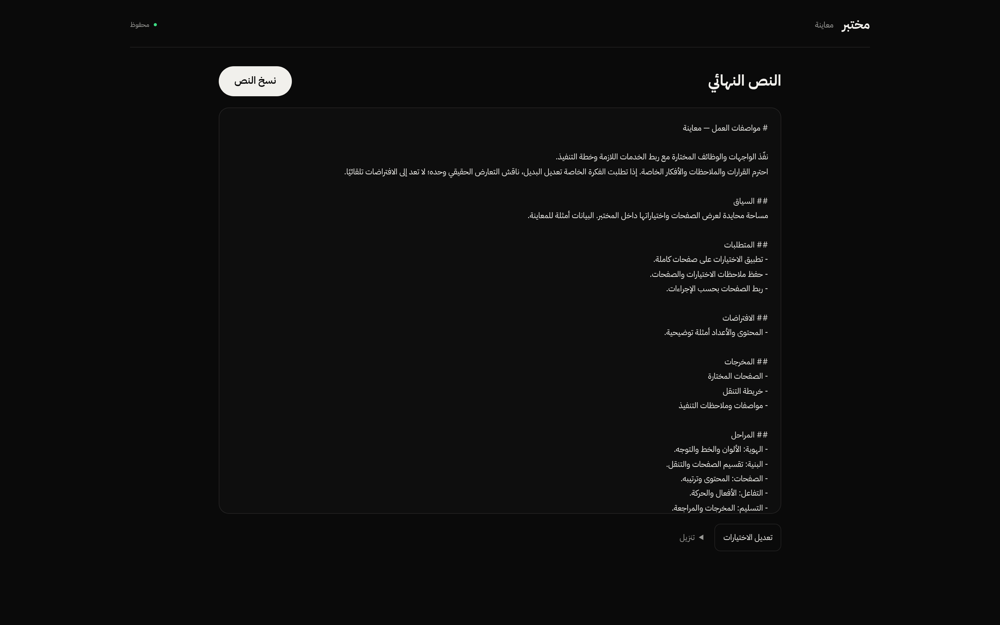
تجميع القرارات والملاحظات ومواصفات التنفيذ في نص قابل للنسخ.
Combine decisions, notes, and implementation specifications into a copyable brief.